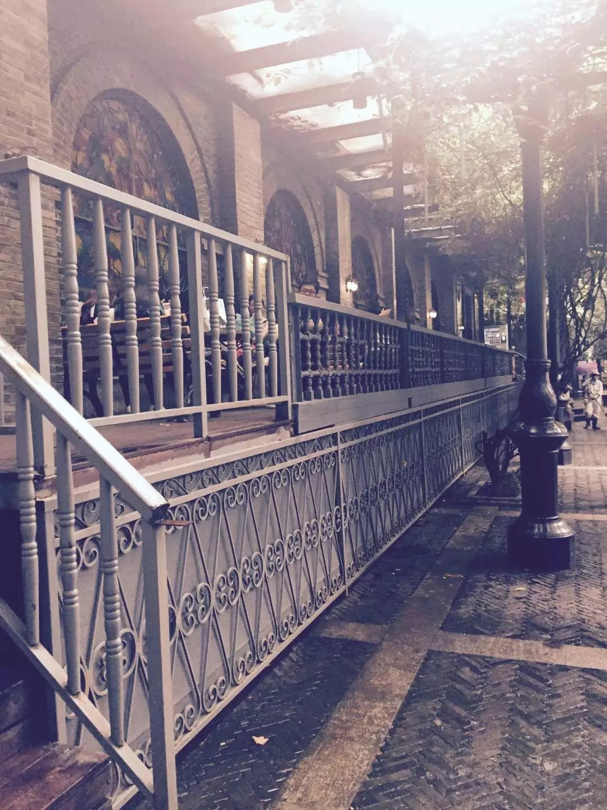

夫子庙是一组规模宏大的古建筑群，是供奉和祭祀孔子的地方，中国四大文庙之一。位于秦淮河北岸的贡院街旁。 夫子庙，始建于东晋成帝司马衍咸康三年(337年)，根据王导提议“治国以培育人材为重”，立太学于秦淮河南岸。当年只有学宫，并未建孔庙。孔庙是宋仁宗景祐元年(1034年)就东晋学宫扩建而成的。因为祭奉的是孔夫子，故又称夫子庙。在学宫的前面建孔庙，目的是在于希望士子遵循先圣先贤之道，接受封建教化。 夫子庙是明清时期南京的文教中心，同时也是居东南各省之冠的文教建筑群。 由于时代要求，夫子庙现已成为群众文化活动场所。现在的夫子庙周围已成热闹的商业街和小吃街。 夫子庙已成为富有明清建筑风格的十里秦淮风光带上的一个重要景点。它以大成殿为中心，南北成一轴线，左右建筑对称，占地约26 300平方米。现已列为市级文物保护单位。人们通常所说的夫子庙，实际包括夫子庙、学宫和贡院主大建筑群。 夫子庙两侧的东西市场，原是学宫前甬道。东甬道为学宫正门，门前有坊，上书“泮宫”。坊东为明清两朝状元、榜眼、探花题名牌坊。坊西为会元、解元题名牌坊，坊的背面是武科题名牌坊。东西甬道旁，原各有三祠两署。民国以后废科举，兴学堂，学宫遂渐衰落，祠、署分别改为学校、教育局、图书馆等，学宫甬道也成为摊贩市场，东西市场的名称便从那时开始。现东西市场于1987年建成，吸收了我国传统的商业街道的空间形式和尺度，采用明清时代的街市风格，以石板铺地，店铺采用“青砖黛瓦马头墙，回廊挂落花格窗”，店、庙、市、街合一，富有浓郁的地方特色。 夫子庙景点最著名的便是乌衣巷。乌衣巷位于夫子庙西南数十米，是一条幽静狭小的巷子，原为东晋名相王导、谢安的宅院所在地。据宋代《景定建康志》卷十六引《丹阳记》，此地原为三国吴乌衣营所在，因而得名。为纪念王导、谢安，在乌衣巷东曾建有来燕堂，建筑古朴典雅，堂内悬挂王导、谢安画像，仕子游人不断，成为瞻仰东晋名相、抒发思古幽情的地方。唐代大诗人刘禹锡的那首脍炙人口的诗“朱雀桥边野草花，乌衣巷口夕阳斜，旧时王谢堂前燕，飞入寻常百姓家”，就是对此处的感叹。从此乌衣巷便名扬中外。 